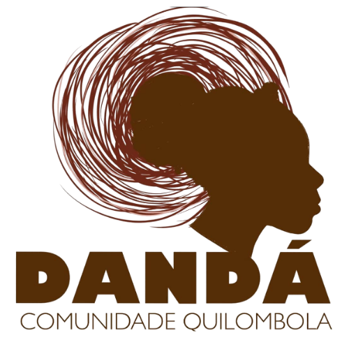
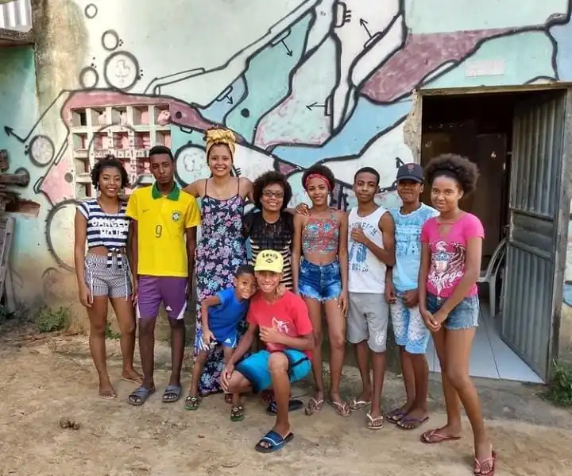
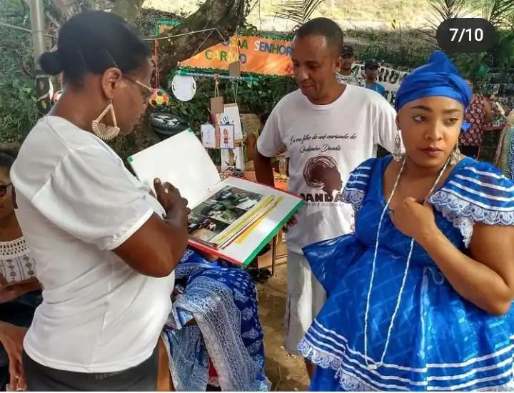
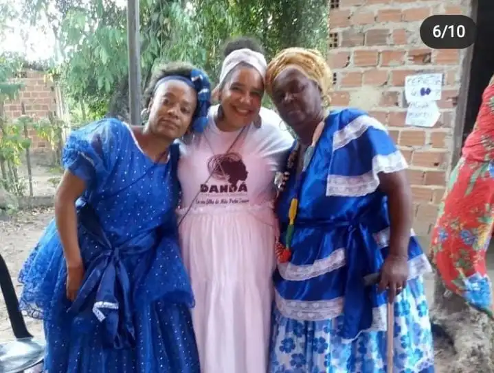
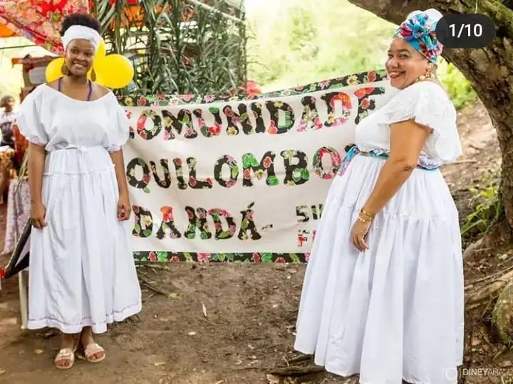
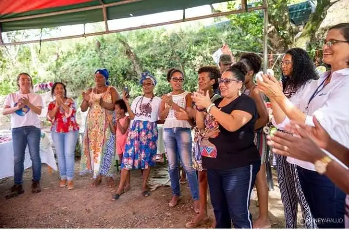

Kilombo do Dandá - BA

"Meu nome é Jamires Souza, tenho 25 anos, sou moradora da comunidade do Dandá, um kilombo que fica localizado às margens da BR-093, na Bahia. Moro na comunidade há 9 anos, tenho uma filha chamada Micaelly, e sou representante jovem da Multiversidade dos Povos da Terra. Sou grata por ter sido escolhida e pretendo somar com os demais para que possamos construir, juntos, uma história de resistência, cuidado e futuro para o nosso território."
Resistência e Ancestralidade
Comunidade que existe há mais de 250 anos, com cerca de 150 famílias que mantêm viva sua tradição, o quilombo de Dandá, segundo contam os mais velhos que hoje não estão aqui conosco, pois já partiram, foi fundado por Dona Joana dos Santos e Senhor Samuel Lopes. Essas terras antigamente pertenciam aos Teixeiras, que eram donos de toda essa região. Foram dadas ao seu Samuel em forma de gratidão por seus serviços prestados a família de senhor Cazuza, que era um dos donos dessas terras e patrão de Samuel. Como o seu Samuel trabalhou a vida toda para família de Cazuza, ele deixou essa terra em forma de gratidão e seu Samuel passou a cultivar essa terra e a morar com sua família, até que seu Cazuza veio a falecer. Como ele não tinha deixado nada escrito dizendo que a terra pertencia a seu Samuel, uma das filhas de seu Cazuza, ambiciosa, não quis cumprir o último desejo de seu pai que era deixar a terra para a família de seu Samuel. Foi aí que se iniciou uma luta judicial por esse território habitado pela família de seu Samuel por filhos e netos.
O quilombo foi reconhecido em 2004 pela Fundação Palmares como remanescente, e com o processo tiveram que criar uma associação para ser responsável por toda a gerência e gestão do território. A comunidade negra rural quilombola de Dandá localiza-se à margem da BH-093, KM 09, no município de Simões Filho, no território que abrange as antigas fazendas Coqueiro e Mata Grossa. A Fazenda Coqueiro, que outrora se chamava Caboatã (o nome de um peixe de água doce), é um local de preservação da herança e manifestações culturais de matriz africana, bem como de seus membros, unidos há mais de cinco gerações em virtude da ancestralidade comum. Apesar de não ser a principal fonte de renda da comunidade, trabalhamos com agricultura familiar, artesanatos, e a venda desses produtos. Temos também a matéria-prima do azeite de dendê, e o azeite de dendê, e o cultivo da piaçava, que é a matéria-prima na criação de vassouras. Além disso, temos a escola que é do governo, mas com professores e funcionários da própria comunidade.

Sobre Agroecologia no Dandá




